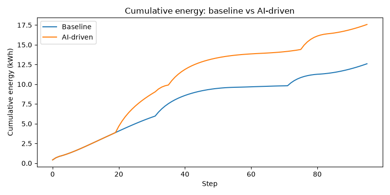
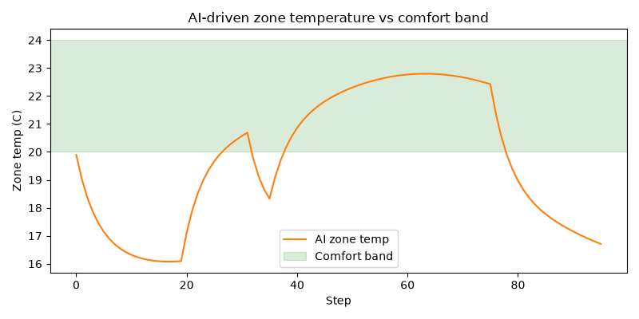

Baseline: logs/mock.csv | AI-driven: logs/mock-ai.csv
The supervisor override rate is the share of LLM setpoint decisions
that the deterministic safety layer had to correct (see supervisor.py).
The higher this number, the more the results above reflect the override rules
rather than the language model's own control judgment.

